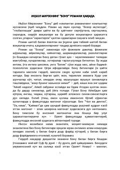

BBonu ismli muallimaning hayotiy sinovlari va matonati haqidagi ta'sirli roman.
Ushbu roman zamonaviy hayotning murakkabliklari, ijtimoiy muammolar va insoniy kechinmalar haqida hikoya qiladi. Asar bosh qahramon Bonu ismli yosh muallimaning maktublari, kundaliklari va xotiralari orqali uning hayotiy sinovlari, matonati va oriyati tasvirlangan.